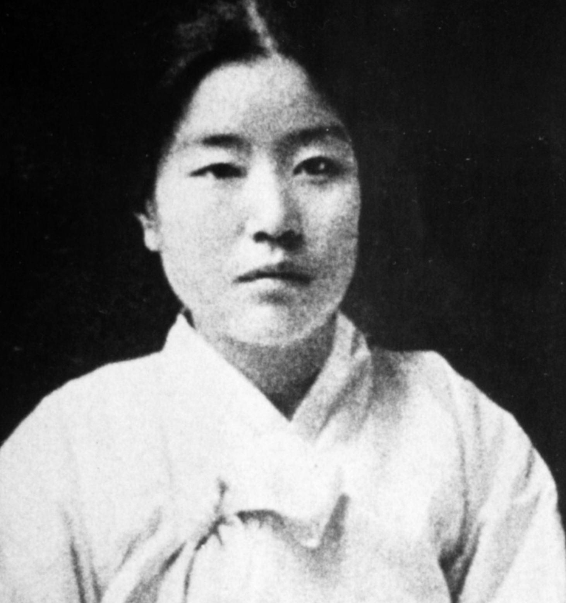

Na Hyeseok (Korean: 나혜석; Hanja: 羅蕙錫, 28 April 1896 – 10 December 1948) was a Korean feminist, poet, writer, painter, educator, and journalist.[1] Her pen name was Jeongwol (Hangul: 정월, 晶月).[2] She was a pioneering Korean feminist writer and painter. She was the first female professional painter and the first feminist writer in Korea.[3] She created some of the earliest Western-style paintings in Korea, and published feminist novels and short stories.[4][5] She became well known as a feminist with her criticism against the marital institution in the early 20th century.
In 2013 and 2014, Park ranked 11th on the Forbes list of the world's 100 most powerful women and the most powerful woman in East Asia.[3] In 2014, she ranked 46th on the Forbes list of the world's most powerful people, the third-highest South Korean on the list, after Lee Kun-hee and Lee Jae-yong. On 9 December 2016, the National Assembly impeached Park on charges related to influence peddling by her top aide, Choi Soon-sil.[4] Then-Prime Minister Hwang Kyo-ahn assumed her powers and duties as Acting President as a result.[5] The Constitutional Court upheld the impeachment by a unanimous 8/0 ruling on 10 March 2017, thereby removing Park from office.[6] On 6 April 2018, South Korean courts sentenced Park to 24 years in prison which was later increased to 25 years.[7][8] Park is currently imprisoned at Seoul Detention Center.